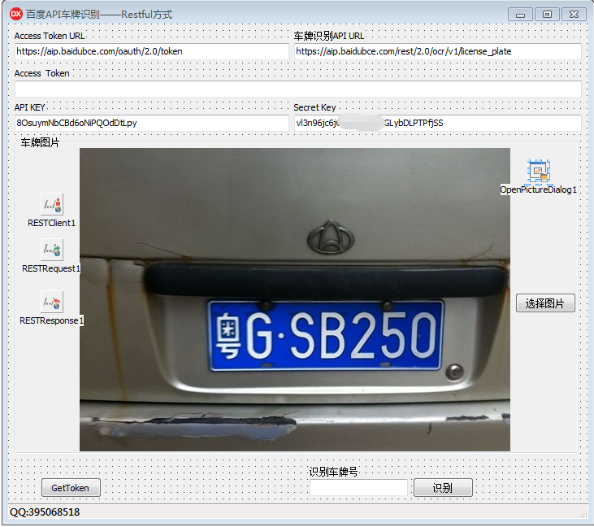
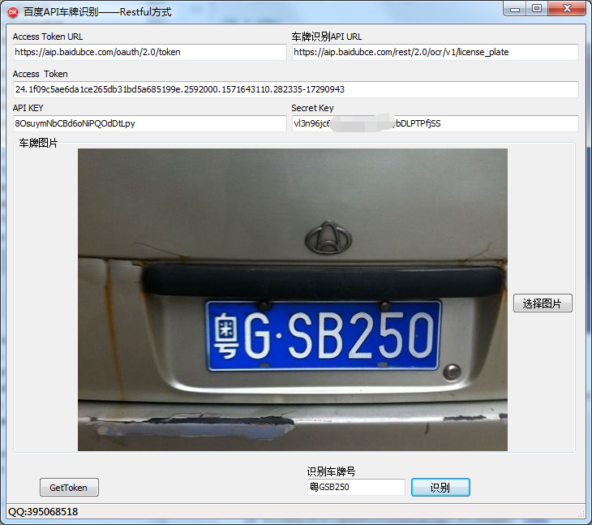

源码下载地址：https://download.csdn.net/download/redhat588/11798294
Delphi xe 10.3.2 for windows 7 环境编译通过！
测式需要先注册百度API账号，拿到API KEY 和Secret Key后才能获取Token值
第一步：首先获取Token地址

1 function TfrmMain.GetToken(TokenUrl, lbledtAPIKEY, lbledtSecretKey
2 : string): string;
3 begin
4 with RESTClient1 do
5 begin
6 BaseURL := TokenUrl;
7 end;
8 with RESTRequest1 do
9 begin
10 Method := rmPOST;
11 AcceptCharSet := 'utf-8';
12 Params.Clear;
13 AddParameter('grant_type', 'client_credentials');
14 AddParameter('client_id', lbledtAPIKEY);
15 // API ID key
16 AddParameter('client_secret', lbledtSecretKey);
17 // API secret key
18 Execute;
19 Result := RESTResponse1.Content;
20 end;
21 end;
22
23 function TfrmMain.GetAccessToken(jsonstr: string): string; // 取jsonstring 值
24 var
25 jo: TjsonObject;
26 jv: TjsonValue;
27 begin
28 jo := nil;
29 jo := TjsonObject.Create;
30 jo := TjsonObject.parsejsonvalue(Tencoding.utf8.getbytes(jsonstr), 0)
31 as TjsonObject;
32 jv := jo.Get('access_token').JsonValue;
33 Result := jv.Value;
34 end;
35
36
37 procedure TfrmMain.Button1Click(Sender: TObject);
38 begin
39 lbledtToken.Text := GetAccessToken(GetToken(lbledtTokenUrl.Text,
40 lbledtAPIKEY.Text, lbledtSecretKey.Text));
41 end;
function TfrmMain.GetCarNumJson(AccessToken, CarNumAPI: string): string;
var
strtemp: string;
temp: TjsonObject;
strm: TMemoryStream;
ss: TStringStream;
s: string;
begin
if frmMain.Image1.Picture.Graphic <> nil then
begin
strm := TMemoryStream.Create;
frmMain.Image1.Picture.SaveToStream(strm);
ss := TStringStream.Create('');
strm.Position := 0;
EncodeStream(strm, ss); // 将内存流编码为base64字符流
s := ss.DataString;
strm.Free;
ss.Free;
end;
RESTClient1.BaseURL := CarNumAPI;
RESTRequest1.Params.Clear;
RESTRequest1.AddParameter('access_token', AccessToken);
RESTRequest1.AddParameter('image', s);
RESTRequest1.Execute;
Result := RESTResponse1.Content;
end;
function TfrmMain.GetCarNum(CarNumJSONStr: String): string;
var
jo: TjsonObject;
jo2: TjsonObject;
jv: TjsonValue;
jsonstr: string; // 要转换的json字符串
jsonstr2: string; // 要转换的json字符串
begin
// 先取出嵌套的那个字符串
jo := TjsonObject.parsejsonvalue(CarNumJSONStr) as TjsonObject;
jsonstr := jo.GetValue('words_result').ToString;
// 再对这个字符串取值
jo2 := TjsonObject.parsejsonvalue(jsonstr) as TjsonObject;
jsonstr2 := jo.GetValue('words_result').ToString;
try
jv := jo2.Get('number').JsonValue;
Result := jv.Value;
finally
jo.Free;
end;
end;
procedure TfrmMain.Button2Click(Sender: TObject);
begin
lbledtCarNum.Text := GetCarNum(GetCarNumJson(lbledtToken.Text,
lbledtAPIURL.Text));
end;
最后：结果图
